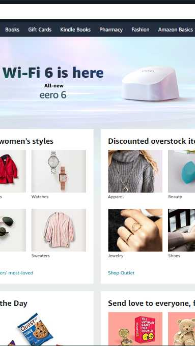
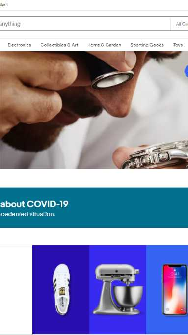

Design Principles
Rule Of Thirds
Amazon
Amazon.com Amazon has a very nice grid layout with all the things you would want right at the front page.
I think it's a very nice layout that really shows off the rule of third.
I think it's very appealing to the eye and captures your attention right away.
White Space and Clean Design
I ended up choosing google because it had a very clean and minimalist design to it.
I think this helps the website a lot. Since there is nothing else really to click or interact with other than the search bar.
It's pretty straightforward and I think anyone from any age group can figure it out.
Visual Hierarchy
Ebay
Ebay.com Ebay has a very large banner photo at the very top showing you what you would most likely be interested in.
As you scroll down there are more things that it shows you. It also shows off things that you have looked at in the past to see if you are still interested.
I think this is a very good website to show off visual hierarchy.